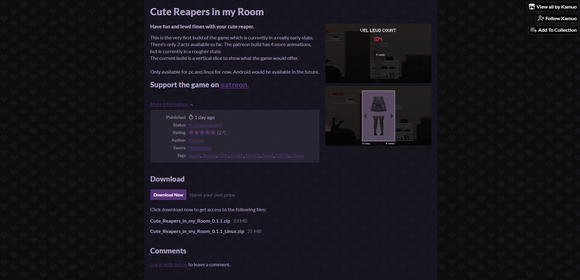

就在二十九个小时前，死神三部曲作者kamuo在忒忑宣布新作“Cute Reapers in my Room”已经在itch上正式发布，以下为新作简报 - - - - - - - - - - - - - -
北京时间2022年8月20日凌晨4:09，kamuo在忒忑宣布新作“Cute Reapers in my Room”的第一个版本已经在itch上发布。此作为模拟游戏，并无任何剧情，内容及其稀少，下图为详细信息。对于新作的中文命名，吧内暂定为“我房间里的死神好可爱”，近期发布其帖子及其资源贴都将使用吧内命名，吧友可回复交流 
本贴是2022.8.21版
历史版（累计有阅读数：0、点赞数：0、回复数：0）：